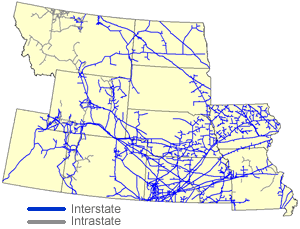

|
About U.S. Natural Gas Pipelines - Transporting Natural
Gas
based on data through 2007/2008 with selected updates |
|||||||||||||||||||||||||||||||||||||||||||||||||||||||||||||||||||||||||||||||||||||||||||||||||||||||||||||||||||||||||
|---|---|---|---|---|---|---|---|---|---|---|---|---|---|---|---|---|---|---|---|---|---|---|---|---|---|---|---|---|---|---|---|---|---|---|---|---|---|---|---|---|---|---|---|---|---|---|---|---|---|---|---|---|---|---|---|---|---|---|---|---|---|---|---|---|---|---|---|---|---|---|---|---|---|---|---|---|---|---|---|---|---|---|---|---|---|---|---|---|---|---|---|---|---|---|---|---|---|---|---|---|---|---|---|---|---|---|---|---|---|---|---|---|---|---|---|---|---|---|---|---|---|
|
Twenty-two interstate and at least thirteen intrastate natural gas pipeline companies (see Table below) operate in the Central Region (Colorado, Iowa, Kansas, Missouri, Montana, Nebraska, North Dakota, South Dakota, Utah, and Wyoming). Twelve interstate natural gas pipeline systems enter the region from the south and east while four enter from the north carrying Canadian supplies. The average utilization rates on those shipping Canadian natural gas tend to be higher than those carrying domestic supplies. The region consumes less natural gas gas than it produces (about 48 percent) and therefore is a net exporter of natural gas. The region has several large metropolitan markets that are major destinations on the regional interstate natural gas pipeline network. Two of the largest are Denver, Colorado, served by Colorado Interstate Gas Company, and Salt Lake City, Utah, which is served by Questar Pipeline Company. Additional markets include the Kansas City metropolitan area of Kansas and Missouri, served by the Southern Star Central Gas Pipeline Company (formerly Williams Gas Pipeline Central), KM Interstate Gas Transmission Company, and Panhandle Eastern Pipeline Company systems; and the St Louis, Missouri, area, which is served by the Centerpoint Mississippi River Transmission Company and Southern Star Central Pipeline Company systems. Even more extreme is the U.S. portion of the Alliance Pipeline Company system, which has only three delivery points between the location at which it begins, the Saskatchewan/North Dakota border, and its termination point in the vicinity of Joliet, Illinois. Likewise, several large interstate natural gas pipelines originating in the Southwest (West Texas and Oklahoma panhandles) provide only limited service within the region on their way to markets in the Midwest. These natural gas pipeline systems flow northeastward primarily through Kansas, Missouri, Nebraska and Iowa to reach Midwest natural gas markets. The two largest are the Natural Gas Pipeline Company of America and the Panhandle Eastern Transmission systems. The ANR Pipeline Company system follows a similar route, but it provides greater service within the region, especially in Iowa. |
Central Region Natural Gas Pipeline Network

|
||||||||||||||||||||||||||||||||||||||||||||||||||||||||||||||||||||||||||||||||||||||||||||||||||||||||||||||||||||||||
The Texas Eastern Transmission Company system only skirts the lower southeastern corner of the region, providing service at fewer than 15 delivery points. The Northern Natural Gas Pipeline Company system, on the other hand, has more than 225 delivery points within the Central Region, primarily in Iowa and Nebraska. While it has the capability to transport 1.6 Bcf per day into the region from the Southwest, it also receives large volumes of natural gas from interconnections to other interstate natural gas pipelines within the region. Indeed, when the Northern Natural Pipeline Company system exits the Central Region into the Midwest Region (Minnesota and Illinois), its local capacity has increased to more than 2.2 Bcf per day. For the regional interstate natural gas pipelines, the largest State-to-State capacity within the region is Southern Star Central Gas Pipeline Company's line from Kansas to Missouri with a capacity of 1.3 Bcf per day. However, the average usage rates on this and similar service lines in the area are low, primarily owing to the seasonal nature of the service: low summer time flows tend to offset the high winter flows. In 2006, for instance, average annual utilization of Southern Star’s Kansas/Missouri line was only about 21 percent. In Colorado, the Rocky Mountain Natural Gas Company provides interconnections between natural gas producers in the western part of the State and the TransColorado Gas Transmission Company, which travels southward into New Mexico en route to the California market, through the Transwestern Gas Company and El Paso Natural Gas Pipeline Company systems. In addition, in 2006, the TransColorado Gas Transmission Company installed a capability to reverse flow on its system, providing natural gas producers operating in the developing Unita/Piceance Basins of eastern Utah and western Colorado the opportunity to also transport their product eastward to the Cheyenne Hub in eastern Colorado via other regional natural gas pipelines to access transportation services to Midwest markets. TransColorado Transmission also further expanded its northern flow capacity out of the San Juan Basin in southern Colorado in 2008 to give producers in that area greater access to these Midwest markets, in addition to their traditional Western regional market. Also providing transporation service out of the Unita and Piceance basins is the western portion of the Rockies Express Pipeline system. Completed in February 2007, the 328-mile Rockies Express-Entrega system has the capability to transport 1.5 Bcf per day of natural gas supplies from northwestern Colorado and southwestern Wyoming to the Cheyenne Hub located in northeastern Colorado. A major LDC in the western part of this region is Questar Gas Company (formerly Mountain Fuel Supply Company), which serves the Salt Lake City area and accounts for 99 percent of the receipts from interstate natural gas pipelines operating in Utah. Questar Pipeline Company, an affiliate, supplies the needs of this intrastate company. The Public Service Company of Colorado is the major distributor of gas in Colorado, with more end-use customers in a single State than any other company in the region. Colorado Interstate Gas Company provides nearly all of the gas to this LDC. Exports of Expanding Coal bed and Conventional Natural Gas Production The expanding development of natural gas resources in Wyoming and Colorado, especially for coal bed methane and tight-sands natural gas, has greatly increased the amount of natural gas pipeline capacity built within and exiting the area in recent years. Since 1999, at least seven large-capacity header-laterals have been built in Wyoming alone, transporting natural gas from local gathering systems to interconnections with major interstate natural gas pipelines such as Colorado Interstate Gas Company, Wyoming Interstate Gas Company, Northwest Pipeline Company, Questar Overthrust Pipeline Company, and Questar Pipeline Company. These header-laterals include: the Fort Union Gathering header (1.3 Bcf per day), the Thunder Creek Gathering header (0.4 Bcf per day), the Bighorn Gas Gathering header (0.5 Bcf per day), Lost Creek Gathering header (0.3 Bcf per day), Jonah Gas Gathering system, (2.4 Bcf per day), and the Wyoming Interstate Pipeline Company's Medicine-Bow lateral (1.4 Bcf per day). In addition to these routes, several existing intrastate natural gas pipelines have also provided support to producers needing natural gas transportation services in the area. This new capacity, including recent expansions to the initial lines, represents an increase of 4.5 Bcf per day in take-away capability from the expanding Wyoming production basins. In addition, as this capacity has grown, other interstate natural gas pipelines, such as Colorado Interstate Gas Company, Trailblazer Pipeline Company, TransColorado Gas Transmission Company, and Kern River Gas Transmission Company, which provide transportation to more long-distance destinations, have also increased their capabilities as well. Prior to 2004, the Trailblazer Pipeline Company, which receives natural gas from the Wyoming Interstate Company and Colorado Interstate Gas Company systems at the Cheyenne Hub in northeastern Colorado, provided the principal transportation route for Rocky Mountains area natural gas to reach markets in the Midwest Region (via interconnections with Natural Gas Pipeline Company of America and Northern Natural Gas Company in Nebraska). In 2004, however, the Colorado Interstate Gas Company installed the Cheyenne Plains Pipeline system ( 0.8 Bcf per day) which runs from the Cheyenne hub to major interconnections in southern Kansas, giving it the capability to deliver natural gas to other interstate systems which have delivery points located to the east, within the Midwest Region. In addition, in early 2008, Kinder Morgan Energy Partners LP completed the 713-mile western portion of the Rockies Express Pipeline system which has the capability to initially transport up to 1.5 Bcf per day of natural gas from the Cheyenne Hub to eastern Missouri. In 2009, the Rockies Express Pipeline will be extended to Ohio and eventually to New Jersey. Moreover, in recent years, the Kern River Gas Transmission Company and TransColorado Gas Transmission Company have also expanded their capabilities to transport natural gas to western markets, with substantial increases in capacity from Utah and Nevada (Kern River Transmission Company, 1.8 Bcf per day) and the Piceance Basin of northwest Colorado and San Juan Basin of southern Colorado (TransColorado Gas Transmission Company, 0.7 Bcf per day). In addition, several existing intrastate natural gas pipelines have provided support to producers needing natural gas transportation services out of the Rocky Mountains production areas. In Wyoming, these include the Overland Trails Pipeline Company system, which interconnects with the Questar Overthrust Pipeline Company and the Questar Pipeline Company systems in western Wyoming, and the MIGC and MGTC Pipeline Company systems which link the production fields in northeast Wyoming with the KM Interstate Gas Transmission Company system which, in turn, provides transportation southeastward into Nebraska. New expansion capacity planned over the next several years in the Rocky Mountain area will support much of the growing natural gas production out in the area, primarily directing it to the Cheyenne Hub located in northeast Colorado.
|
|||||||||||||||||||||||||||||||||||||||||||||||||||||||||||||||||||||||||||||||||||||||||||||||||||||||||||||||||||||||||
| Principal Natural Gas Pipeline Companies Serving the Central Region
with links to pipeline web sites
|
|||||||||||||||||||||||||||||||||||||||||||||||||||||||||||||||||||||||||||||||||||||||||||||||||||||||||||||||||||||||||